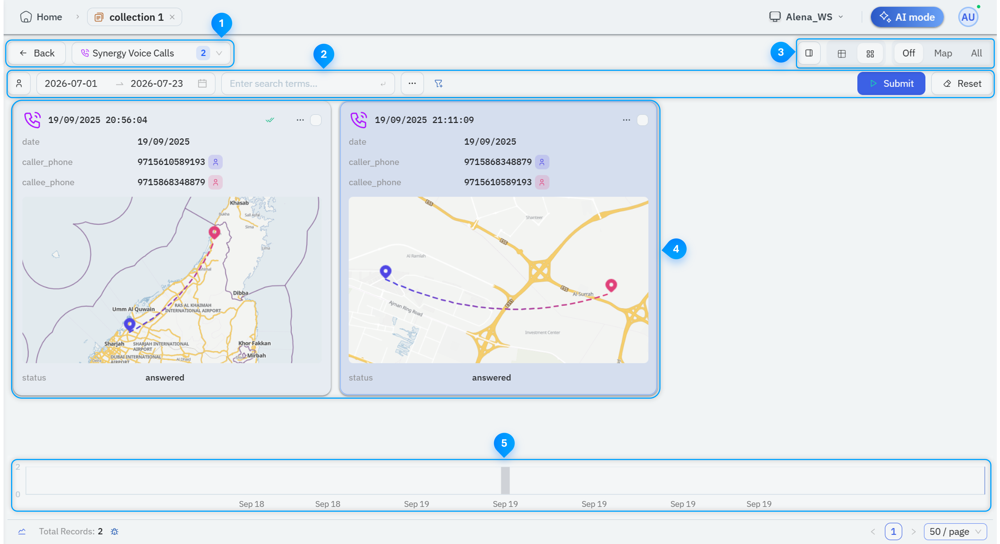

Working with Records in a Collection
The Records section displays the collected records in a card view. Each card represents the schema from which the records were added.
In this Topic
Viewing Records in a Collection
To view records in a collection, do the following:
- Log in to Synergy.
- From the Open Workspace drop-down, select the relevant workspace. All available workspace components are displayed.
- Expand the Collections component and click the required collection. Existing data in the selected collection is displayed.
- In the Records section, on the card that represents the required records, click Show records. All available records are displayed in a grid view.
Exploring Records UI Elements
The following image illustrates the Records UI elements:

This image is for illustrative purposes only and does not represent real data.
The following table explains the Records UI elements:
| # | Section | Description |
|---|---|---|

|
Records |
Enables you to switch between the records group. You can do the following:
|

|
Search and Filter |
Enables you to do the following:
|

|
Display Toolbar |
Enables you to change the display the records in panel, table, or card view. You can do the following:
|

|
Records |
Displays records and their details. You can right-click a record and do the following :
|

|
Timeline |
Displays the distribution of records across time intervals. You can drag across the timeline to select a specific time period to add it as a Time Range filter. |
View and Manage Record Details
The Record Details panel enables you to view and manage the record details.
To open the Record Details panel, right-click a record and select Open in details panel. The panel opens on the right.
In the Record Details panel, you can do the following:
- View all field-level details for the selected record.
- Mouse over field and click the Add comment to field (+) icon to add a field-level comment.
- Open the Comments tab and add a record-level comment.
- Add associated profiles to a report or a profile set.
- Expand a profile or view the profile on a separate tab.
- Search for related profiles using identifiers.
- Copy a field value.
- Delete a record.